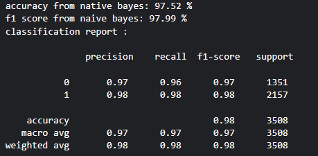

Machine Learning-Based Phishing Email Detection
High-Level Design (HLD)
System Overview
- Data Layer: Cleaned text dataset (17,000+ emails) with lexical and metadata features
- Processing Layer: Text cleaning, tokenization, feature encoding, ML and DL training, evaluation
- Application Layer: API or Streamlit app for real-time email checking
Detailed Design (DLD)
Input Data
17,000+ email records with raw text and engineered NLP features, labeled as 1 = Phishing, 0 = Safe.
Preprocessing
- Remove null and duplicate emails
- Encode labels numerically
- Clean text by removing links, punctuation, and converting to lowercase
- Tokenize and pad text sequences for deep learning models
Feature Set
- Lexical: Word count, special character frequency, email length
- Metadata: Presence of suspicious terms, unusual formatting
- Semantic: NLP embeddings for contextual analysis
Model Pipeline
- Load and clean dataset; train-test split (80/20)
- Train models: Naive Bayes, Logistic Regression, Random Forest, XGBoost
- Build and train LSTM deep learning model
- Evaluate using accuracy, precision, recall, F1, ROC-AUC
- Save best performing models
Flowcharts / Diagrams (Text Format)
Workflow Diagram
User Email → Preprocessing → Feature Extraction → ML/DL Model → Prediction → Result
Data Flow Diagram (DFD)
Level 0: User ↔ Phishing Detection System ↔ Email Dataset
Level 1:
Email Input → Text Cleaner → Feature Generator → Classifier → Output
Process Flow (Training Phase)
Start
↓
Load Dataset
↓
Clean & Preprocess Data
↓
Train Models (NB, LR, RF, LSTM)
↓
Evaluate Models
↓
Save Best Model
↓
End
Process Flow (Prediction Phase)
Start
↓
User Inputs Email Text
↓
Preprocess
↓
Load Model
↓
Predict Phishing/Safe
↓
Show Result
↓
End
Results
| Model |
Accuracy |
Precision |
Recall |
F1-Score |
ROC-AUC |
| Naive Bayes |
97.5% |
0.98 |
0.98 |
0.98 |
0.99 |
| Logistic Regression |
98.2% |
0.98 |
0.98 |
0.99 |
0.99 |
| LSTM (Deep Learning) |
96.5% |
0.97 |
0.97 |
0.97 |
0.99 |
Some Visual Results per Model
Naive Bayes

Logistic Regression
Comparison of Models
LSTM (Deep Learning)
References (IEEE Format)
- N. Abdelhamid, A. Ayesh, and F. Thabtah, "Phishing detection based associative classification data mining," Expert Systems with Applications, vol. 41, no. 13, pp. 5948–5959, 2014.
- Y. Zhang, J. Hong, and L. F. Cranor, "CANTINA: A content-based approach to detecting phishing websites," in Proc. 16th Int. Conf. World Wide Web (WWW), 2007, pp. 639–648.
- D. Miyamoto, et al., "An evaluation of machine learning-based methods for detection of phishing sites," in Proc. APWG eCrime Researchers Summit, 2008.
- S. Marchal, G. Armano, et al., "PhishStorm: Detecting phishing with streaming analytics," IEEE Trans. Comput., vol. 65, no. 5, pp. 1352–1365, 2016.
- Kaggle, "Phishing Email Dataset," [Online]. Available: https://www.kaggle.com/